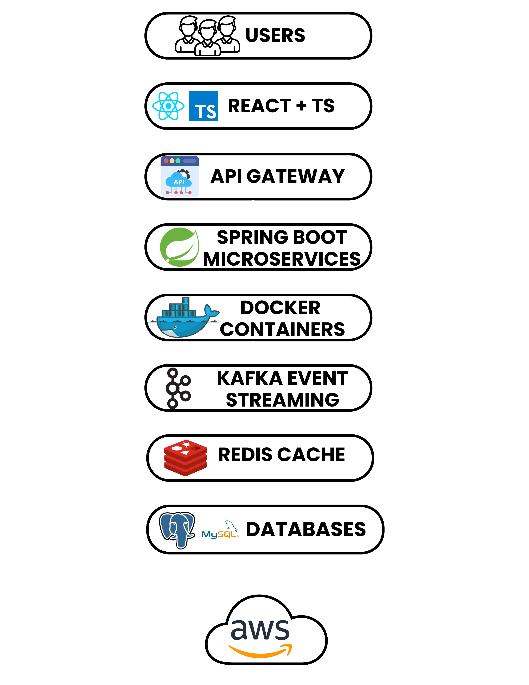

Full Stack Engineer
Full Stack Engineer building scalable systems and modern web platforms
I design and build scalable cloud-native platforms using React, TypeScript, Spring Boot microservices, Kafka event streaming, and AWS infrastructure. My work focuses on distributed systems, high-performance APIs, and resilient microservice architectures.
React + TypeScript
Spring Boot Microservices
Kafka Event Streaming
AWS + CI/CD
Focus Areas
- Distributed Systems
- Performance Optimization
- Cloud-Native Architecture
Open to full-stack, frontend-leaning, and platform engineering roles
Highlights
Engineering highlights
About
Professional summary
Full Stack Software Engineer with 5+ years of experience building scalable cloud-native applications across frontend, backend, and cloud infrastructure.
I specialize in designing modern web platforms using React, TypeScript, and Spring Boot, developing secure REST APIs and distributed microservices, and improving system performance through scalable architecture and database optimization.
My work spans frontend application development, backend service design, cloud deployment, CI/CD automation, and observability for production systems.
I have also published research on data mining applications and trends in the International Journal of Innovations in Engineering and Technology (2016).
What I do
Build full-stack web platforms
Design scalable APIs and microservices
Improve performance and reliability
Deliver production-ready cloud deployments
Contribute across frontend, backend, and infrastructure
Experience
Impact across product engineering and platform development
Full Stack Software Engineer
Impex Tech Lab Pvt. Ltd. · Remote (US)
Built and delivered scalable full-stack applications supporting high-volume distributed e-commerce workflows.
- Built React and TypeScript applications supporting 5K+ daily e-commerce transactions.
- Designed Spring Boot microservices for asynchronous distributed workflows.
- Implemented Kafka and Redis messaging to improve system responsiveness under load.
- Improved backend throughput by 35% through query and schema optimization.
- Reduced frontend defects by 45% by standardizing reusable component architecture.
- Automated CI/CD and improved observability with Jenkins, GitHub Actions, and AWS CloudWatch.
Software Engineer
Precisely Software Inc. · Burlington, MA
Developed backend services and APIs supporting enterprise data governance platforms.
- Built Spring Boot microservices for distributed data processing workflows.
- Designed scalable REST APIs for ingestion and retrieval of enterprise datasets.
- Improved backend performance through SQL optimization and schema tuning.
- Contributed to backend integrations, code reviews, and production deployments.
Software Engineer
HCL Technologies · Publicis Sapient
Worked on enterprise systems, data pipelines, APIs, and mobile application features across early engineering roles.
- Migrated large-scale clinical datasets with strong data integrity and audit-readiness requirements.
- Automated validation workflows to improve data processing reliability and reporting visibility.
- Built Spring Boot APIs and hybrid mobile application features for internal workflows.
- Implemented containerized deployments using Docker.
Projects
Selected engineering projects and system design work
Featured System Design Project
Cloud-Native Task Management Platform
Designed a full-stack task platform using React and Spring Boot microservices with Kafka-based asynchronous workflows, Redis caching, JWT/RBAC security, and Dockerized CI/CD on AWS EC2.
Problem
Build a secure, scalable platform for distributed task workflows with responsive frontend experiences and maintainable service boundaries.
Architecture
React frontend, Spring Boot microservices, REST APIs, Kafka event streaming, Redis caching, JWT auth, RBAC, Docker, Jenkins, and AWS EC2 deployment.
Impact
Demonstrates a production-style cloud-native architecture using Spring Boot microservices, Kafka event streaming, Redis caching, and containerized deployment designed for scalable distributed task processing.
Stack
React
Spring Boot
Kafka
Redis
AWS
Docker
Jenkins
Distributed E-Commerce Workflows
Designed backend services supporting high-volume transactional workflows across distributed microservices.
Architecture + Impact
Spring Boot services, Kafka-based async communication, Redis-backed performance improvements, and AWS-hosted infrastructure aligned to scalable service boundaries.
5K+ Daily Transactions
Microservices
Observability
Enterprise Data Governance Services
Developed backend APIs for ingesting, validating, and processing enterprise datasets with emphasis on reliability and query performance.
Architecture + Impact
Built Spring Boot APIs and SQL-backed services for ingestion and retrieval workflows while improving maintainability and backend responsiveness.
Spring Boot
SQL Tuning
REST APIs
Engineering
System Design Principles
API Gateway layer for routing and authentication
Spring Boot microservices enabling independent scaling
Database indexing and query optimization
Monitoring and observability with Prometheus
Research
Publications
Data Mining: Current Applications & Trends
International Journal of Innovations in Engineering and Technology (IJIET), 2016
Survey research analyzing data mining techniques including classification, clustering, regression, association rule mining, and real-world applications across finance, retail, telecommunications, and web systems.
Tech Stack
Core technologies I use to build production systems
Frontend
Backend
Data & Messaging
Cloud & Delivery
System Design
Cloud-Native Task Platform Architecture

Scalable cloud-native architecture built with React and TypeScript, Node.js microservices, Docker containers, Kafka event streaming, Redis caching, and AWS cloud infrastructure.